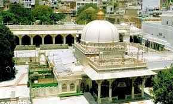

Ajmer-E-Sharif
|  |
 |
Standing at the heart of a bustling street, Ajmer-e-Sharif is one of the most sanctified Sufi shrines in the country. Dargah Sharif or Ajmer-e-Sharif invites devotees from across the globe, who come to pay homage to Khwaja Moinuddin Chishti. He was known for his secular ideologies and noble teachings pertaining to peace. The street outside the Dargah is lined with shops selling a wide range of articles like perfumes, sweets, flowers and 'chadars' or cloth, which are offered to Khwaja. As one enters the Dargah, one needs to go through a series of massive doors made of silver with striking carvings. They open into a courtyard that houses the tomb of Moinuddin Chishti, carved out of marble. The Dargah has a gold plating on top and is guarded by a railing made of silver and a marble screen. The evening rituals include Mehfil-e-Sama, which is an enthralling experience for visitors. Don't miss the massive cooking utensil called badi deg while you are leaving the Dargah compound. It is believed that throwing money in the vessel will make all your wishes come true.